Interpretable Deep Learning for Molecules and Materials
Andrew White
University of Rochester
Department of Chemical Engineering
International Symposium on Molecular Spectroscopy
June, 2022
The Whitelab
✨deep learning✨
Given $\vec{x}$ and $y$, find a function $\hat{f}(\vec{x})$ that predicts $\hat{y}$
\[ \hat{y} = \sigma\left(\mathbf{W}X + b\right) \]- $\sigma$ non-linear activation
- $\mathbf{W}$ trainable weights
- $\mathbf{W}$ trainable bias
A book on it: dmol.pub
Example of a Neural Network
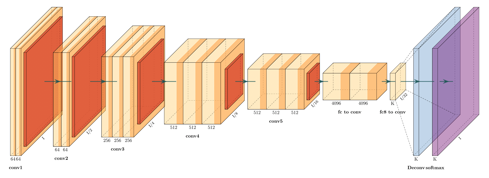What is possible with
\[ \hat{y} = \sigma\left(\mathbf{W}X + b\right) \]$x$ is "Robot doing chemistry", $y$ is image
Model: VQGAN+CLIP
Brief Principles of Deep Learning for Molecules
Inductive Bias
Explicit choices made in architecture that reflect data-generation or solution space.
Inductive Bias
Explicit choices made in architecture that reflect data-generation or solution space. physics
Inductive Bias
Mol Graph

Point Cloud
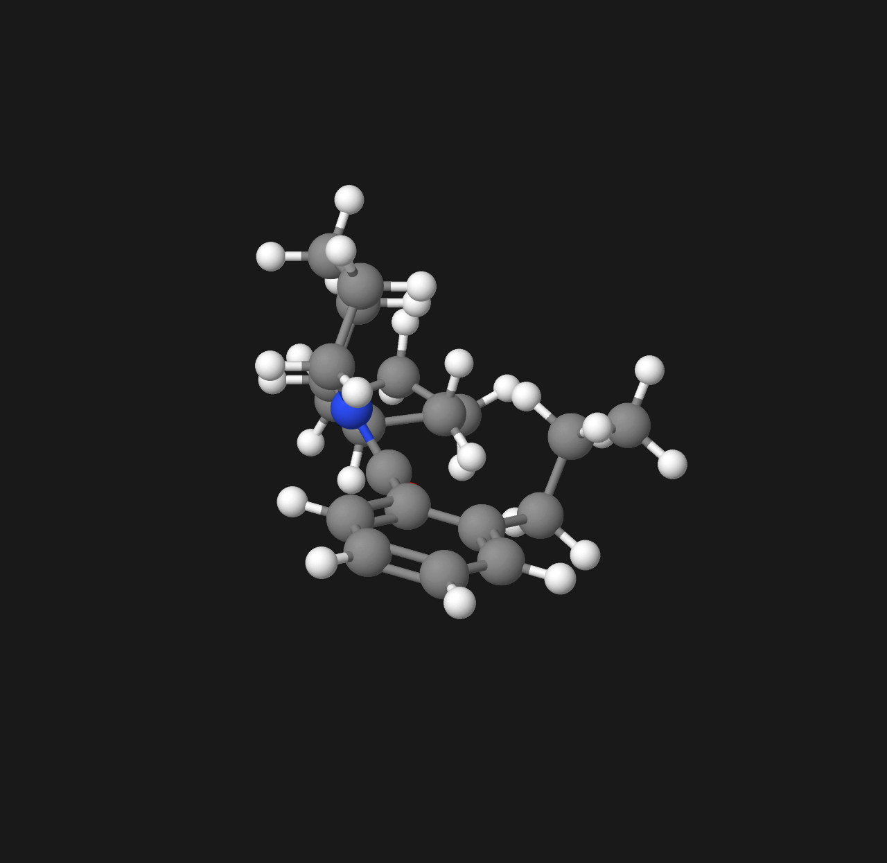Inductive Bias
Mol Graph
- atom permutation equivariance
- bond permutation equivariance
Point Cloud
- atom permutation equivariance
- translation equivariance
- rotation equivariance
Inductive Bias
Mol Graph
- atom permutation equivariance
| C | O | N | $\hat{f}(x)$ | |
|---|---|---|---|---|
| 0 | 1 | 0 | 0 | 0.3 |
| 1 | 1 | 0 | 0 | 0.8 |
| 2 | 1 | 0 | 0 | 0.1 |
| 3 | 1 | 0 | 0 | 0.0 |
| 4 | 1 | 0 | 0 | 0.0 |
| 5 | 1 | 0 | 0 | 0.0 |
| 6 | 1 | 0 | 0 | 0.2 |
| 7 | 1 | 0 | 0 | 0.5 |
| 8 | 1 | 0 | 0 | 0.9 |
| 9 | 1 | 0 | 0 | 0.6 |
| 10 | 0 | 1 | 0 | 0.3 |
Inductive Bias
Mol Graph
- atom permutation equivariance
| C | O | N | $\hat{f}(x)$ | |
|---|---|---|---|---|
| 3 | 1 | 0 | 0 | 0.0 |
| 1 | 1 | 0 | 0 | 0.8 |
| 2 | 1 | 0 | 0 | 0.1 |
| 0 | 1 | 0 | 0 | 0.3 |
| 4 | 1 | 0 | 0 | 0.0 |
| 5 | 1 | 0 | 0 | 0.0 |
| 6 | 1 | 0 | 0 | 0.2 |
| 7 | 1 | 0 | 0 | 0.5 |
| 8 | 1 | 0 | 0 | 0.9 |
| 9 | 1 | 0 | 0 | 0.6 |
| 10 | 0 | 1 | 0 | 0.3 |
Inductive Bias
Example
Point Cloud
- atom permutation equivariance
- translation equivariance
- rotation equivariance
Representation and Model Decisions
SMILES
CCCC1=CC=CC=C1C(=O)
N2CCCC[C@H]2C3CCCC3
Sequence Network
(1D Conv, RNN, Transformer)
Mol Graph
Graph Neural Networks
Points
Equivariant Neural Networks
Representation and Model Decisions
SMILES
Preferred
Mol Graph
If you must
Points
Avoid
The Power of Text
Text is excellent at predicting scalars — invariant to permutations.* Training is fast, implementations are easy, available in javascript🚀
Why do molecules smell?
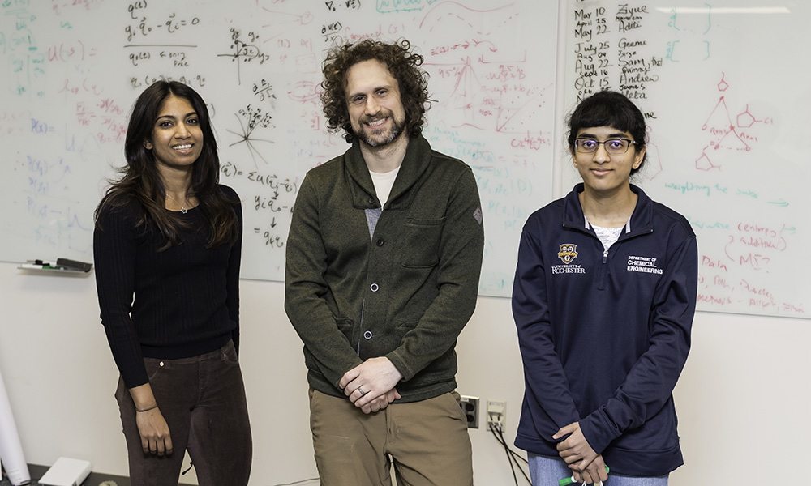XAI with Counterfactuals🔦
Wellawatte, G. P., Seshadri, A. & White, A. D. Model agnostic generation of counterfactual explanations for molecules. (2021).
What is an explanation of a prediction?
- Justification: reasoning for using a prediction, like test error
- Interpretability: "the degree to which an observer can understand the cause of a decision"
- Explanation: a presentation of information intended for humans that give the context and cause for a prediction
Instance Explanations
- Feature Explanation: which features contributed most to outcome?
- Contrastive Explanation: what would the outcome be if the features were different?
- Counterfactual Explanation: what are the closest features with a different outcome?
Counterfactual
My grant proposal was rejected from NSF. If I had correctly formatted my references, it would have been funded.
Chemistry Counterfactual
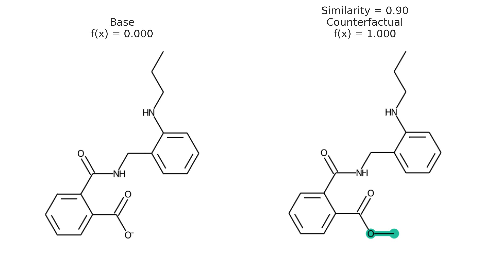Counterfactuals are solution to optimization. Given prediction $x,\hat{f}(x)$, find $x'$ with
\begin{aligned} \texttt{minimize}&\quad d(x, x')\\ \texttt{such that}&\quad \hat{f}(x) \neq \hat{f}(x') \end{aligned}
Challenging because optimization requires $\nabla_x\hat{f}(x)$
Use STONED Method to enumerate chemical spcae
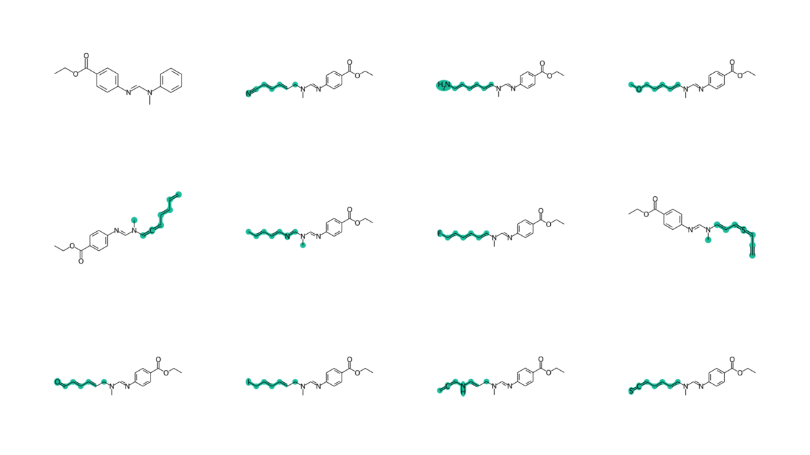Output
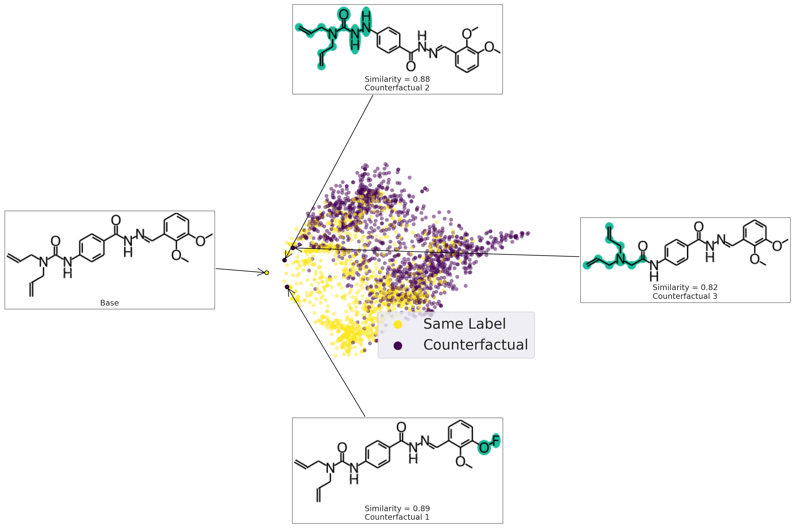Heta doesn't like it
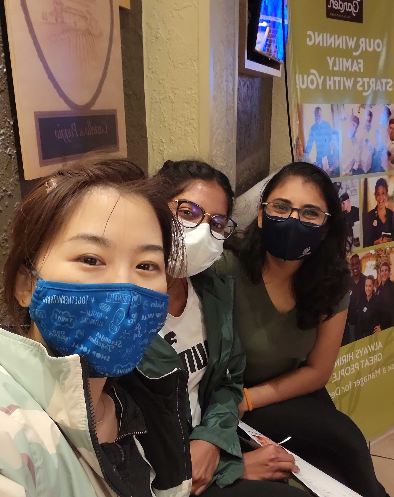XAI with Surrogates🔦
Gandhi, H. A. & White, A. D. Explaining structure-activity relationships using locally faithful surrogate models. (2022).
- Amit Dhurandhar, Pin-Yu Chen, Ronny Luss, Chun-Chen Tu, Paishun Ting, Karthikeyan Shanmugam, and Payel Das. NIPS 2018
- Bhanushee Sharma, Vijil Chenthamarakshan, Amit Dhurandhar, Shiranee Pereira, James A. Hendler, Jonathan S. Dordick, and Payel Das. arxiv 2022.
- Kevin McCloskey, Ankur Taly, Federico Monti, Michael P. Brenner, and Lucy J. Colwell. PNAS 116(24):11624-11629, 2019. Agnieszka Wojtuch, Rafał Jankowski, and Sabina Podlewska. J Chem Inf, 13:1-20, 12 2021.
- Jose Jimenez-Luna, Miha Skalic, Nils Weskamp, and Gisbert Schneider. JCIM, 61: 1083-1094, 3 2021
Counterfactuals
- Actionable
- Correct/Accurate
- Faithful/Exact Representation
- Sparse
- Model-free/non-causal
- Sparse
- Is a molecular structure
Surrogate Model
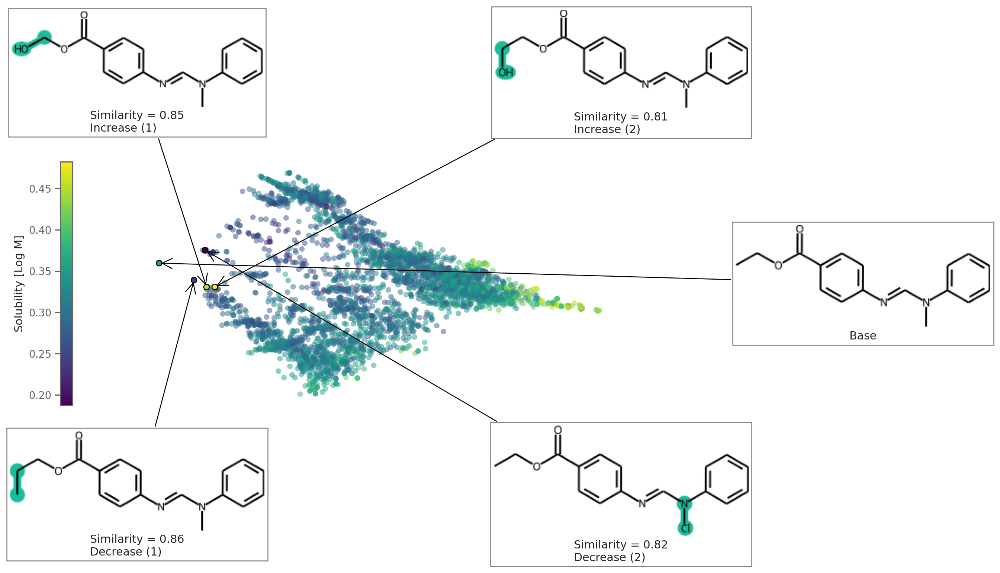Surrogate Model
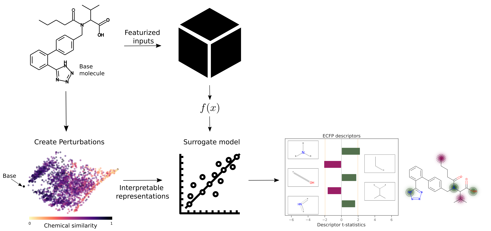The explanation
$$ \xi (\vec{x}) = \arg\min_{g \in G} \mathcal{L}(f, g, w) + \Omega(g) $$ $$ g(\vec{x}) = \vec{\beta} \cdot \vec{x}, \, \Omega(g) = \sum \beta_i^2 $$ $$ w = \sigma\left[d(\vec{x}, \vec{x}')\right] $$
Fitting surrogate model
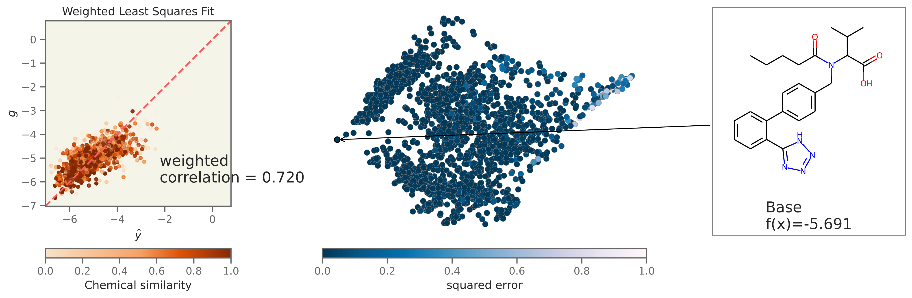Solubility Descriptor Explanation
logS = -5.69
Solubility MACCS Explanation
logS = -5.69
Solubility ECFP Explanation
logS = -5.69
Solubility Atom Explanation
logS = -5.69
Natural Language Explanation
"The molecule is predicted to be weakly soluble because there is not a CH2 group involved in a double bond and there is not a heteroatom in a 6M ring. These both would increase the solubility. In addition, the molecule is predicted to be not very soluble because there is more than one 6M ring and there is an alkene bond. These both decrease the solubility."
pip install exmol
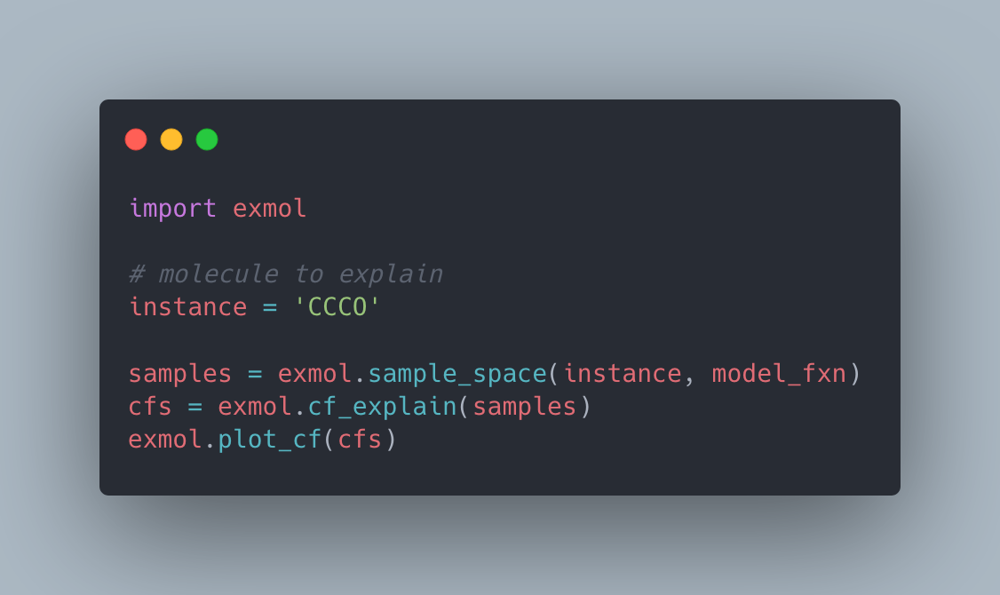Glen Hocky from NYU
How much chemistry do LLMs know 🧠?
White, A. D. & Hocky G., & et al. How much chemistry do LLMs know? (2022).
Example Questions
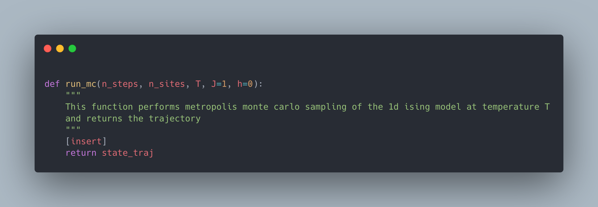Example Questions
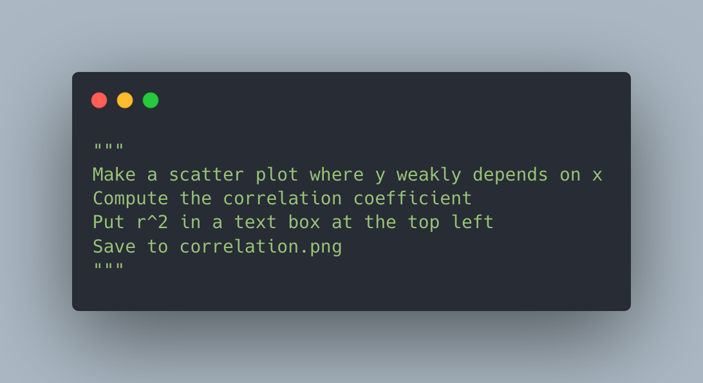Accuracy
| Topic | N | incoder-6B | davinci |
|---|---|---|---|
| bio | 13 | 0% | 63% |
| cheminf | 10 | 20% | 60% |
| genchem | 11 | 29% | 86% |
| md | 11 | 0% | 75% |
| plot | 10 | 90% | 100% |
| qm | 8 | 43% | 100% |
| sim | 8 | 50% | 100% |
| spectroscopy | 11 | 30% | 60% |
| stats | 11 | 40% | 90% |
| thermo | 10 | 10% | 80% |
| overall | 84\(^*\) | 31% | 82% |
Purpose (Teleonomy)?
- Using comments to fill missing code
- Explaining code with comments
- Adding typing/const correctness
- Computing runtime complexity
- Writing unit tests
The weird part
Copyright prefix
# MIT License
# Copyright (c) 2022 University of Rochester
Confidence prefix
# This is written by an expert Python programmer
questions
acknowledgements
nsf che #1764415, nsf cbet #1751471, nsf iis #2029095, nsf dmr #2103553, nih #R35GM137966